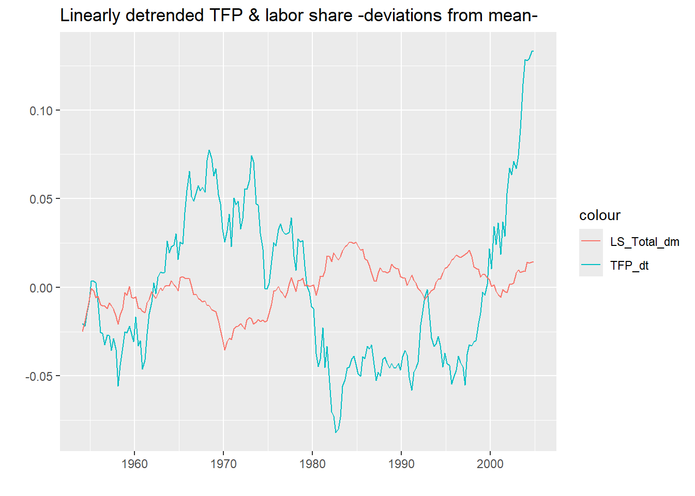
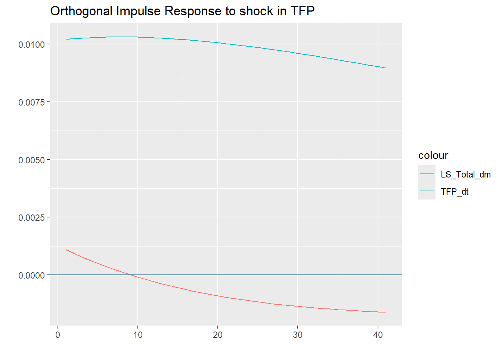
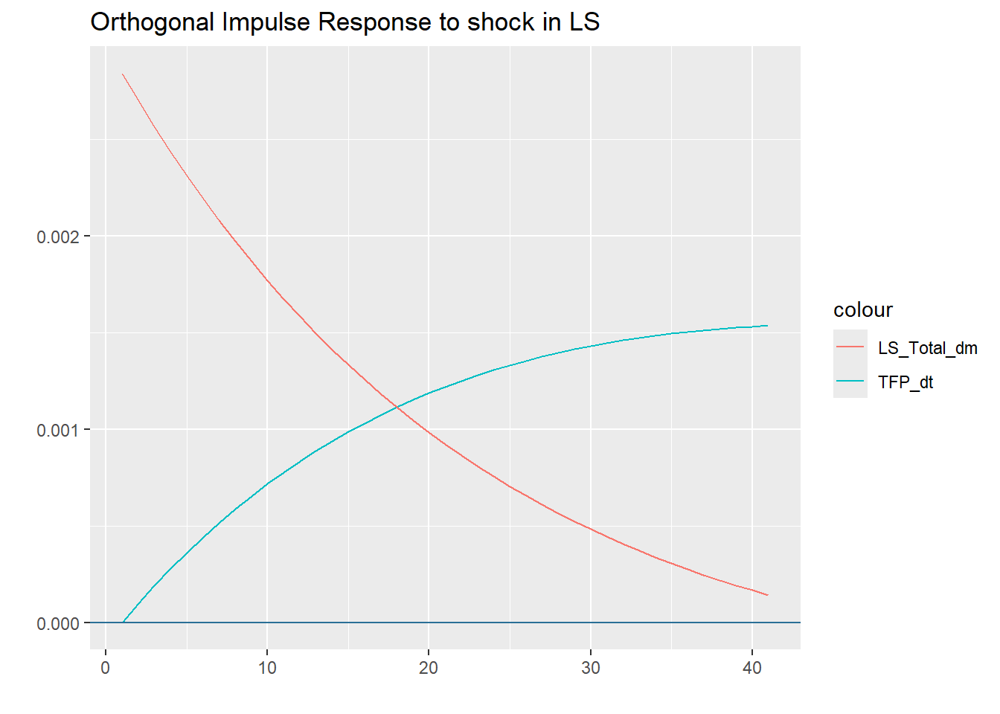
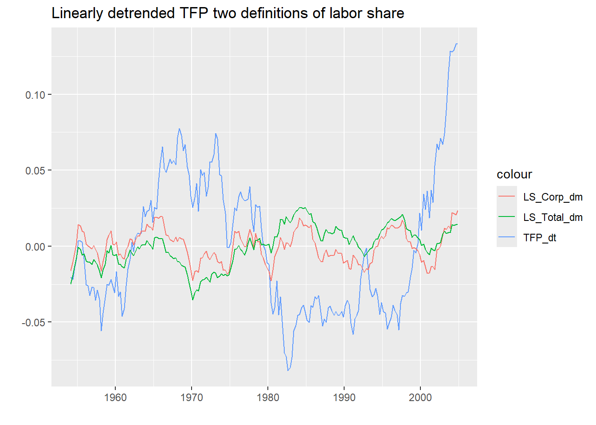
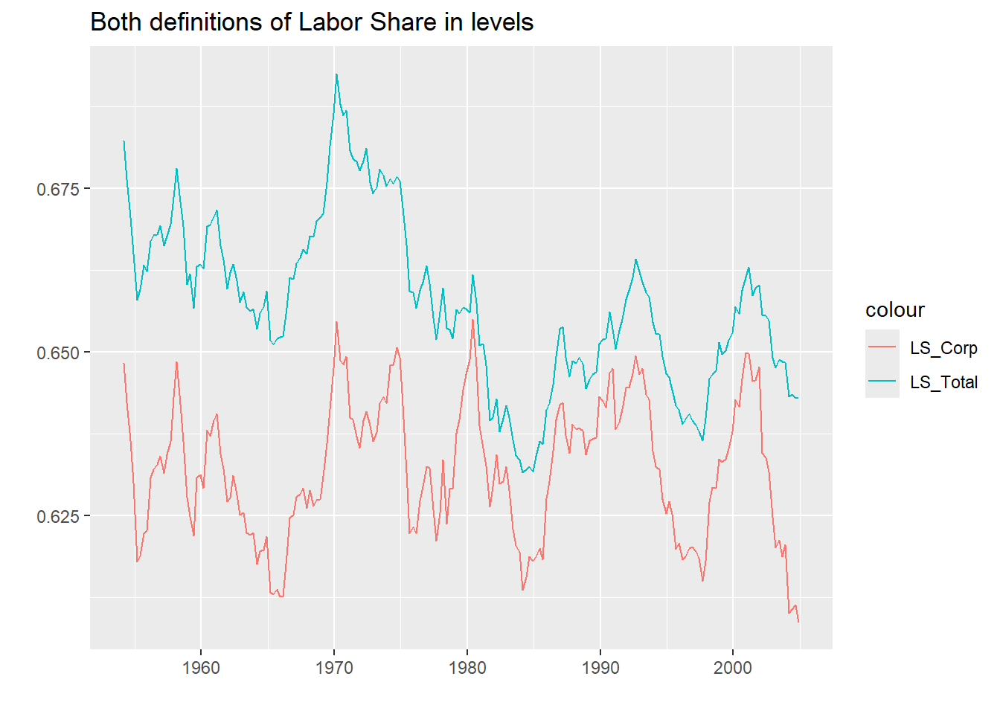

Does Productivity Move the Labour Share? Overshooting and Structural Identification in a Bivariate VAR
SVAR
VAR
labour share
productivity
macroeconometrics
impulse response
FEVD
R
A hands-on macroeconometric study of how the labour share responds to productivity shocks, replicating the overshooting result of Rios-Rull and Santaeulalia-Llopis (2010). Covers VAR estimation and lag selection, structural identification through A and B models, impulse response functions, forecast error variance decomposition, and a robustness check using an alternative definition of the labour share.
Authors
Andrés Martínez González
Lucía Ibáñez
Published
November 14, 2020
Working example: Redistributive Shocks and Productivity Shocks by Rios-Rull and Santaeulalia-Llopis (2010). The authors document the dynamic effects of productivity shocks on labor share. The so called overshooting is the situation when a productivity innovation produces a reduction of labor share at impact, making it countercyclical, but it also subsequently produces a long-lasting increase in labor share that peaks above mean five years later at a level larger in absolute terms than the initial drop, after which time it slowly returns to average.
The authors analyze the behavior of a bivariate stochastic process for the labor share and a productivity residual (slightly different from the Solow residual) that explicitly considers the fact that factor input shares change over time
Therefore, we are interested in 2 stationary series linearly detrended productivity residual, \(z_t^1\) ; and labor share (deviations from mean), \(z_t^2\)
The productivity residual is recovered from data on output, hours, capital and labor share. We may be interested not only in the cyclical properties of \(z_t^1\) and \(z_t^2\) but also in the systematic joint behavior between \(z_t^1\) and \(z_t^2\) . To get a better idea of this joint dynamics we can use a vector AR system, and compute IRFs and FEVDs
We now pose a statistical model to find an underlying stochastic process that generates the joint distribution of \(z_t^1\) and \(z_t^2\) that is:
Where, \(z_t = (z_t^1, z_t^2)'\) and \(\Gamma\) are 2by2 square matrix. The innovations \(\varepsilon_t = (\varepsilon_t^1, \varepsilon_t^2)'\) are serially uncorrelated and follow a bivariate Gaussian distribution with unconditional mean zero and a symmetric positive definite variance-covariance matrix \(\Sigma\)
Thus, this specification has seven parameters: the four coefficient regressors in \(\Gamma\), and the variances and covariance in \(\Sigma\)
The first step is to load the data, apply the required transformations and look at time series plot. We’re going to make use of the package vars as well as other packages as tidyvers or magrittr If you need to download it then go the Packages tab and click on Install. Alternatively, you can type install.packages(vars) in the Console.
#Load some libraries to use its built in functionssuppressMessages(library(readxl))
Warning: package 'readxl' was built under R version 4.5.2
suppressMessages(library(vars))
Warning: package 'vars' was built under R version 4.5.3
Warning: package 'strucchange' was built under R version 4.5.3
Warning: package 'zoo' was built under R version 4.5.2
Warning: package 'sandwich' was built under R version 4.5.2
Warning: package 'urca' was built under R version 4.5.3
Warning: package 'lmtest' was built under R version 4.5.3
suppressMessages(library(pracma))
Warning: package 'pracma' was built under R version 4.5.3
suppressMessages(library(tidyverse))
Warning: package 'tidyverse' was built under R version 4.5.2
Warning: package 'ggplot2' was built under R version 4.5.3
Warning: package 'tibble' was built under R version 4.5.2
Warning: package 'tidyr' was built under R version 4.5.2
Warning: package 'readr' was built under R version 4.5.2
Warning: package 'purrr' was built under R version 4.5.2
Warning: package 'dplyr' was built under R version 4.5.3
Warning: package 'stringr' was built under R version 4.5.2
Warning: package 'forcats' was built under R version 4.5.2
Warning: package 'lubridate' was built under R version 4.5.2
suppressMessages(library(magrittr))
Warning: package 'magrittr' was built under R version 4.5.2
data <-read_excel("Data_PS2_Macro.xlsx")names(data) <-c("date", "LS_Total", "LS_Corp", "TFP")#Filter to have the same time window as in the paperdata %<>%filter(date >"1954-03-01" , date <"2005-03-01") data %<>%mutate(TFP_dt =detrend(TFP, tt ='linear')) #Linear detrenddata %<>%mutate(LS_Total_dm =mean(LS_Total) - LS_Total) #Deviations from the meanggplot(data, aes(date)) +#Plotting the seriesgeom_line(aes(y = TFP_dt, colour ="TFP_dt")) +geom_line(aes(y = LS_Total_dm, colour ="LS_Total_dm"))+ggtitle("Linearly detrended TFP & labor share -deviations from mean-") +xlab("") +ylab("")

Looking at the graph we could say that the variables could be considered fairly stationary. They seem to have a zero mean and a constant variance. Now we estimate the model and interpret the ouptput.
We can make use of information criteria to determine lag length for the VAR(p) model.
series <-subset(data, select=c("TFP_dt", "LS_Total_dm")) info.var <-VARselect(series, lag.max =12, type ="both")info.var$selection
AIC(n) HQ(n) SC(n) FPE(n)
2 1 1 2
Using the HQ/SQ these results suggest that we should make use of a VAR(1). We then need to estimate the reduced-form VAR to get an appropriate object that is to be manipulated into the structural-form of the model.
var.1<-VAR(series, p =1, type ="none")summary(var.1)
VAR Estimation Results:
=========================
Endogenous variables: TFP_dt, LS_Total_dm
Deterministic variables: none
Sample size: 203
Log Likelihood: 1546.808
Roots of the characteristic polynomial:
0.9904 0.9592
Call:
VAR(y = series, p = 1, type = "none")
Estimation results for equation TFP_dt:
=======================================
TFP_dt = TFP_dt.l1 + LS_Total_dm.l1
Estimate Std. Error t value Pr(>|t|)
TFP_dt.l1 0.99927 0.01735 57.594 <2e-16 ***
LS_Total_dm.l1 0.03433 0.06085 0.564 0.573
---
Signif. codes: 0 '***' 0.001 '**' 0.01 '*' 0.05 '.' 0.1 ' ' 1
Residual standard error: 0.01021 on 201 degrees of freedom
Multiple R-Squared: 0.9506, Adjusted R-squared: 0.9501
F-statistic: 1935 on 2 and 201 DF, p-value: < 2.2e-16
Estimation results for equation LS_Total_dm:
============================================
LS_Total_dm = TFP_dt.l1 + LS_Total_dm.l1
Estimate Std. Error t value Pr(>|t|)
TFP_dt.l1 -0.010306 0.005177 -1.991 0.0479 *
LS_Total_dm.l1 0.950402 0.018155 52.350 <2e-16 ***
---
Signif. codes: 0 '***' 0.001 '**' 0.01 '*' 0.05 '.' 0.1 ' ' 1
Residual standard error: 0.003046 on 201 degrees of freedom
Multiple R-Squared: 0.9429, Adjusted R-squared: 0.9424
F-statistic: 1660 on 2 and 201 DF, p-value: < 2.2e-16
Covariance matrix of residuals:
TFP_dt LS_Total_dm
TFP_dt 1.036e-04 1.104e-05
LS_Total_dm 1.104e-05 9.244e-06
Correlation matrix of residuals:
TFP_dt LS_Total_dm
TFP_dt 1.0000 0.3567
LS_Total_dm 0.3567 1.0000
The VAR that we have estimated can be expressed compactly as:
What do the coefficients mean? The first entry (0.999) is the coefficient ((_{1,1}$) of the lag of \(z_{1,t}\) on the variable \(z_{1,t}\). Therefore is the autoregressive coefficient of TFP. The second entry (0.034) is the coefficient (\(\gamma_{1,2}\)) of the lag of \(z_{2,t}\) on \(z_{1,t}\). This is, the autoregressive coefficient (\(\gamma_{2,1}\)) of Labor Share on the TFP. The entry on the second row and first column (-0.010) is the coefficient of TFP on Labor share, and the bottom corner right (0.950) is the autoregressive coefficient (\(\gamma_{2,2}\))of Labor share onto itself.
The fact that \(\gamma_{1,2}\) is not significantly different from zero implies that current shocks to labor share do not have an impact on future productivity
This matrix matrix \(\hat{\Gamma}\) can be recovered from the var.1 object thorough the coefficients as follows:
Once we have recovered the coefficients, we are interested in the structure of the innovations . First we will take a look to the covariance matrix of residuals, this is \(\hat{\Sigma}\). As we can see below our innovations are contemporaneously correlated. This is an issue because we can not disentangle the effect of one shock in one variable and the effect of this shock onto the variable itself and the other variable.
To understand SVAR models, it is important to look more closely at the variance-covariance matrix . It contains the variances of the endogenous variable on its diagonal elements and covariances of the errors on the off-diagonal elements. The covariances contain information about contemporaneous effects each variable has on the others. The covariance matrices of standard VAR models is symmetric, i.e. the elements to the top-right of the diagonal (the “upper triangular”) mirror the elements to the bottom-left of the diagonal (the “lower triangular”). This reflects the idea that the relations between the endogenous variables only reflect correlations and do not allow to make statements about causal relationships.
Contemporaneous causality or, more precisely, the structural relationships between the variables is analysed in the context of SVAR models, which impose special restrictions on the covariance matrix and – depending on the model – on other coefficient matrices as well. The drawback of this approach is that it depends on the more or less subjective assumptions made by the researcher. For many researchers this is too much subjectiv information, even if sound economic theory is used to justify them. However, they can be useful tools and that is why it is worth to look into them.
To avoid this issue we have to follow and identification strategy and transform our VAR in a SVAR. Exploding the fact that \(\gamma_{1,2}\), this is, the effect of a lag of Labour Share on TFP is not significantly different from zero implies that current shocks to labor share do not have an impact on future productivity. Therefore the restriction that we are going to use, will make our matrix of VCV to look something like:
To set-up the matrix for the contemporaneous coefficients, we need to make use of a matrix that has the appropriate dimensions. This is easily achieved with the aid of the diagnol matrix. To code this appropriately we need to insert zeros for restrictions and NA in all those places that would not pertain to a restriction.
1.1 The B Model
The B-model describes the structural relationships of the errors directly by adding a matrix \(B\) to the error term and normalises the error variances to unity so that
\[
z_t = \Gamma z_{t-1} + B\varepsilon_t
\]
Where
\[
u_t = B\varepsilon_t \quad \varepsilon_t \sim(0,I_k)
\] We then need to set-up the matrix for the identification of individual shocks. Once again starting with the diagonal matrix, we need to insert zeros into the covariance terms, while the variance for each of the individual shocks is to be retrieved. Hence
This printout suggest that there will be no covariance terms for the residuals. We are finally at a point where we can estimate the SVAR(1) model. This is achieved by including the the above two matrices. The maximum number of iterations has also been obtained, and we are also going to populate values for the Hessian, which is useful when looking to trouble shoot.
SVAR Estimation Results:
========================
Call:
SVAR(x = var.1, estmethod = "scoring", Amat = NULL, Bmat = b.mat,
max.iter = 10000, lrtest = FALSE, hessian = TRUE)
Type: B-model
Sample size: 203
Log Likelihood: 1544.798
Method: scoring
Number of iterations: 9
Estimated A matrix:
TFP_dt LS_Total_dm
TFP_dt 1 0
LS_Total_dm 0 1
Estimated B matrix:
TFP_dt LS_Total_dm
TFP_dt 0.010208 0.000000
LS_Total_dm 0.001095 0.002842
Estimated standard errors for B matrix:
TFP_dt LS_Total_dm
TFP_dt 0.0005066 0.0000000
LS_Total_dm 0.0002068 0.0001411
Covariance matrix of reduced form residuals (*100):
TFP_dt LS_Total_dm
TFP_dt 0.010421 0.0011182
LS_Total_dm 0.001118 0.0009278
2 IRF
Impulse response functions (IR) answer the question What is the response of current and future values of each of the variables to a one-unit increase in the current value of one of the structural errors, assuming that this error returns to zero in subsequent periods and that all other errors are equal to zero The implied thought experiment of changing one error while holding the others constant makes sense only when the errors are uncorrelated across equations. It is slower but more clear to keep each impulse reponse function separated to work with it latter.
Now, we plot the IRF’s. With a little help of ggplot2 it is easier to plot nicely both IRF in the same graph. Do we know anything about the IRF in advance? Yes, we know.
a <-as.data.frame(TFP_on_LS$irf) b <-as.data.frame(TFP_on_TFP$irf) %>%mutate(index =1:n())IRF_TFP <-cbind(a,b)ggplot(IRF_TFP, aes(index)) +#Plotting the seriesgeom_line(aes(y = TFP_dt, colour ="TFP_dt")) +geom_line(aes(y = LS_Total_dm, colour ="LS_Total_dm"))+geom_hline(yintercept =0, colour ="#296f96") +ggtitle("Orthogonal Impulse Response to shock in TFP") +xlab("") +ylab("")

a <-as.data.frame(LS_on_TFP$irf) b <-as.data.frame(LS_on_LS$irf) %>%mutate(index =1:n())IRF_LS <-cbind(a,b)ggplot(IRF_LS, aes(index)) +#Plotting the seriesgeom_line(aes(y = TFP_dt, colour ="TFP_dt")) +geom_line(aes(y = LS_Total_dm, colour ="LS_Total_dm"))+geom_hline(yintercept =0, colour ="#296f96") +ggtitle("Orthogonal Impulse Response to shock in LS") +xlab("") +ylab("")

3 FEVD
To generate the forecast error variance decompositions we make use of the fevd command, where we set the number of steps ahead to ten. Note that these results suggest that output is largely determined by TFP shocks, while Labor share is influenced by both shocks.
var.1.vd <-fevd(var.1, n.ahead =10)plot(var.1.vd)
4 What happens if we change the definition of Labor Share?
As the paper points out there are several ways to construct the Labor Share. Let’s see what happens if we use another definition of Labor Share. In this case we are using an accounting Labor Share of Income by legal form of organization isolating the corporate sector.
data <-read_excel("Data_PS2_Macro.xlsx")names(data) <-c("date", "LS_Total", "LS_Corp", "TFP")#Filter to have the same time window as in the paperdata %<>%filter(date >"1954-03-01" , date <"2005-03-01") data %<>%mutate(TFP_dt =detrend(TFP, tt ='linear')) #Linear detrenddata %<>%mutate(LS_Corp_dm =mean(LS_Corp) - LS_Corp) #Deviations from the meandata %<>%mutate(LS_Total_dm =mean(LS_Total) - LS_Total)ggplot(data, aes(date)) +#Plotting the seriesgeom_line(aes(y = TFP_dt, colour ="TFP_dt")) +geom_line(aes(y = LS_Corp_dm, colour ="LS_Corp_dm"))+geom_line(aes(y = LS_Total_dm, colour ="LS_Total_dm"))+ggtitle("Linearly detrended TFP two definitions of labor share") +xlab("") +ylab("")

ggplot(data, aes(date)) +#Plotting the seriesgeom_line(aes(y = LS_Corp, colour ="LS_Corp"))+geom_line(aes(y = LS_Total, colour ="LS_Total"))+ggtitle("Both definitions of Labor Share in levels") +xlab("") +ylab("")

We can see that both Labor Share definitions are pretty similar. However, we are going to check the correlation matrix. We can easily see that the Labor Share defined by corporate sector is less correlated with the TFP than the previous definition of Labor Share.
Now we are going to re run the VAR(1) with the new definition.
series <-subset(data, select=c("TFP_dt", "LS_Corp_dm"))var.1.alt <-VAR(series, p =1, type ="none")summary(var.1.alt)
VAR Estimation Results:
=========================
Endogenous variables: TFP_dt, LS_Corp_dm
Deterministic variables: none
Sample size: 203
Log Likelihood: 1486.499
Roots of the characteristic polynomial:
0.9904 0.9253
Call:
VAR(y = series, p = 1, type = "none")
Estimation results for equation TFP_dt:
=======================================
TFP_dt = TFP_dt.l1 + LS_Corp_dm.l1
Estimate Std. Error t value Pr(>|t|)
TFP_dt.l1 0.99310 0.01614 61.511 <2e-16 ***
LS_Corp_dm.l1 0.07173 0.07018 1.022 0.308
---
Signif. codes: 0 '***' 0.001 '**' 0.01 '*' 0.05 '.' 0.1 ' ' 1
Residual standard error: 0.01019 on 201 degrees of freedom
Multiple R-Squared: 0.9508, Adjusted R-squared: 0.9503
F-statistic: 1942 on 2 and 201 DF, p-value: < 2.2e-16
Estimation results for equation LS_Corp_dm:
===========================================
LS_Corp_dm = TFP_dt.l1 + LS_Corp_dm.l1
Estimate Std. Error t value Pr(>|t|)
TFP_dt.l1 -0.002588 0.006664 -0.388 0.698
LS_Corp_dm.l1 0.922569 0.028968 31.848 <2e-16 ***
---
Signif. codes: 0 '***' 0.001 '**' 0.01 '*' 0.05 '.' 0.1 ' ' 1
Residual standard error: 0.004206 on 201 degrees of freedom
Multiple R-Squared: 0.8371, Adjusted R-squared: 0.8354
F-statistic: 516.3 on 2 and 201 DF, p-value: < 2.2e-16
Covariance matrix of residuals:
TFP_dt LS_Corp_dm
TFP_dt 1.033e-04 1.752e-05
LS_Corp_dm 1.752e-05 1.765e-05
Correlation matrix of residuals:
TFP_dt LS_Corp_dm
TFP_dt 1.0000 0.4103
LS_Corp_dm 0.4103 1.0000
As we can see, the low correlation of the new definition of labor share is confirmed in the non significance (at the usual levels) of the lags of one variable onto another. This means, the lag of TFP does not explain the developments of labor share and neither the lag of labor share explains the developments of TFP. For comparison we will impose the same restrictions as before and check the IRFs.